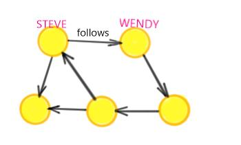

Introduction

Graphs? Graphs!
Graphs are data structures that capture relationships between entities:
- connections, interactions, purchases
- “Steve follows Wendy”, “Emily bought item42"

Egdes might have a cost associated with them, resulting in the so called weighted graph. Weighted graphs capture the strength of the relationship, e.g. similarity, importance, social proximity.

An edge can be either directed or undirected. An undirected edge means that there is no restriction on the direction travelled along the edge, while a directed edge is a one way relationship. The "follows" relationship can be represented by a directed graph while connectivity among users by an undirected graph: if user A is connected to user B then user B is also connected to user A but if user A follows user B then it does not mean that user B also follows user A.

So what?
Analyzing graphs allows us to answer many interesting questions!
- Who is the most influential user on Twitter?
- Which webpage should appear first for a particular web query?
- What is the optimal path to propagate information in a computer network?
- How many hops do I need to go from A to B?
- How similar are the nodes in my network?
How?
Gelly provides methods to create, transform and modify graphs, as well as a library of graph algorithms. It can be used to easily build graph processing applications in Flink. All you need to start with a Gelly project, is to add the following dependency to your pom.xml and follow the rest of the tutorials.
<dependency>
<groupId>org.apache.flink</groupId>
<artifactId>flink-gelly</artifactId>
<version>0.10-SNAPSHOT</version>
</dependency>